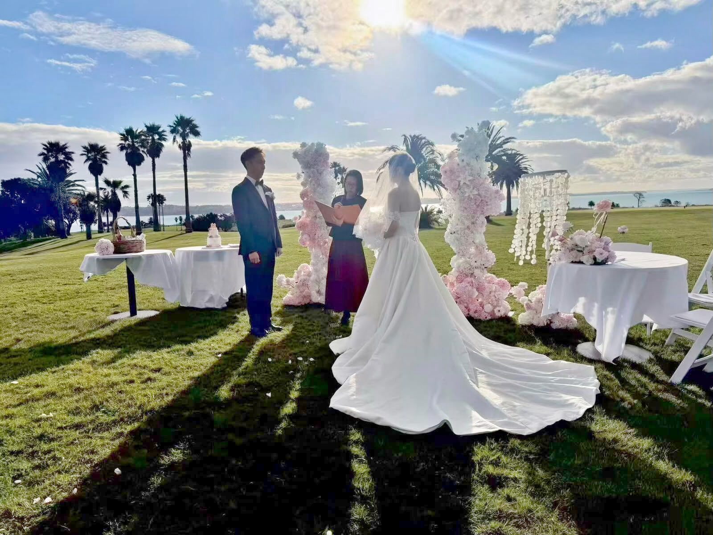
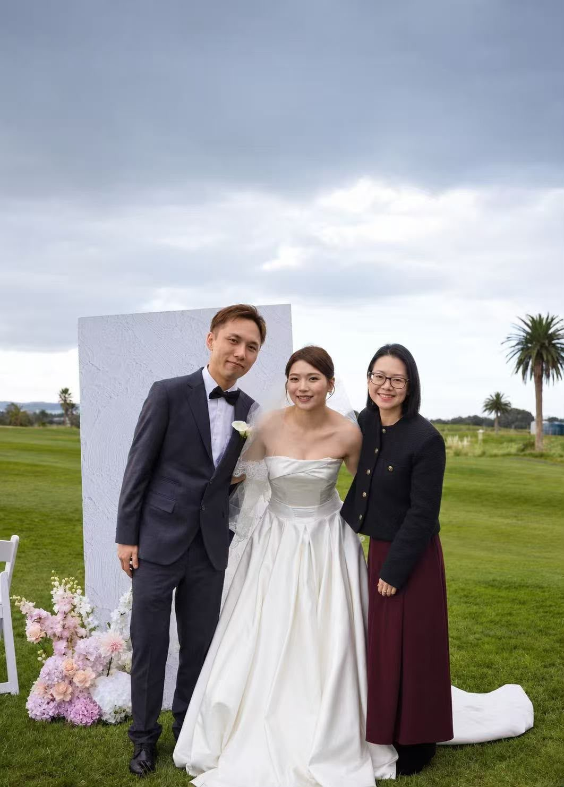

Weddings
Personalised ceremonies shaped around your story, your words and the people with you.
Request a Quote
Marriage and civil union celebrant
I'm Vannarady Ng, also known as Van. I offer personalised wedding ceremonies in Auckland in English, Cantonese and Mandarin.
Xiaohongshu (RedNote) ID
63625534159
Search this ID in the app to find Van.
[QR code · to be supplied by Van]
WeChat ID
Van_Celebrant
Search this ID in the app to find Van.
[QR code · to be supplied by Van]
Ceremonies
Your ceremony is a chance to put your story into words, with the people who matter to you beside you. I hope those words feel personal when you say them, and meaningful when you remember them.
Personalised ceremonies shaped around your story, your words and the people with you.
Request a QuoteEast, central and west Auckland, the North Shore, Rangitoto Island, Hamilton and the South Island. Travel costs apply outside Auckland.
See Where I TravelWhen guests speak different languages, it helps to think about which moments you want everyone to understand. Share the languages used by you and your families when you enquire, along with what matters most to you.
Ask About LanguagesEnglish · 粵語 · 普通話
About Van
I’m a registered Marriage and Civil Union Celebrant based in East Auckland. I was born and raised in Hong Kong, and Cantonese is my first language. I’m also fluent in Mandarin and English. I can hold your ceremony in one language or weave all three together, so everyone you love, from your grandparents to your closest friends, can understand every word and share the moment with you.
By day, I’m a solicitor at a law firm in East Auckland, and I genuinely love what I do. My journey in law began in Hong Kong, and it has grown into a career I’m truly passionate about. I help clients buy their first homes, protect their families and plan for the future. Nothing is more rewarding than taking something that feels complicated or worrying and making it clear and simple. I enjoy finding solutions, spotting risks early and giving my clients real peace of mind.
I bring that same care and attention to your wedding. From checking your marriage licence to lodging your particulars with Births, Deaths and Marriages afterwards, I’ll take care of all the legal details for you. All you need to do is be present, hold each other’s hands and soak in every moment of your special day.
To me, being a celebrant is a real privilege. I get to stand beside two people at one of the biggest milestones of their lives. A wedding is more than a celebration. It’s the moment two people step into new roles together. You become a husband or a wife, a partner for life, a son-in-law or daughter-in-law. One day, perhaps, you’ll become a father or a mother. Two families become one.
I’ve always felt that moments like these deserve to be marked with meaning, and with words that truly belong to you. Being there as you make that promise, surrounded by the people who love you most, is what drew me to this work. It’s also what keeps me coming back to it with a full heart.
Your ceremony should be all about the two of you, not me. I’ll take the time to get to know you, hear your story and help you find your own words. That way your ceremony feels personal, relaxed and completely yours.
Whether you’re dreaming of an intimate ceremony on Rangitoto Island, a garden wedding in Auckland or a celebration further afield, I’d love to hear from you.
Kind words
Thank you so much, Vannarady. From the moment I met you, I’ve always felt you were so sweet and gentle, and so easy to get along with. Before and after the wedding, you gave me not only professional help and support, but you were also like a big sister to me, which made me feel so reassured.
And the script you wrote was just wonderful! When you read it out on the day, my husband told me his eyes welled up and he almost couldn’t hold back his tears. It was such a touching moment, and I felt you expressed our story and our feelings so beautifully.
Thank you for your patience, thoughtfulness and warmth all along, and thank you for giving our wedding such a special and precious memory. I feel truly lucky to have had you as my celebrant.
The Department of Internal Affairs lists me as an independent marriage and civil union celebrant.
Find my listing on Celebrants Online Registration no. 61327
Member of Celebrants Aotearoa · My Celebrants Aotearoa profile
Travel costs apply outside Auckland.
Questions
Short answers to what couples usually ask first. Anything else, just include it in your enquiry.
Still wondering about something?
Ask VanI offer personalised wedding ceremonies in English, Cantonese and Mandarin. For a ceremony in more than one language, tell me what you have in mind and we can talk it through.
East, central and west Auckland, the North Shore, Rangitoto Island, Hamilton and the South Island. Travel costs apply outside Auckland.
Every ceremony is different, so I’ll put together a quote for yours once I know your date, location and plans.
Yes. I’m registered as a marriage and civil union celebrant, and civil union ceremonies are personalised in the same way.
No. Sending an enquiry doesn’t reserve your date. Availability and booking arrangements are confirmed separately.
No. When I’m your celebrant, I’m there as your celebrant only, so a ceremony booking doesn’t include legal advice.
Enquire
You do not need to have every detail settled before asking a question. A preferred date, ceremony location if known, and the languages you have in mind are useful starting points.
Every ceremony is different, so I'll put together a quote for yours.

An enquiry does not reserve your date. Availability and booking arrangements need to be confirmed separately.